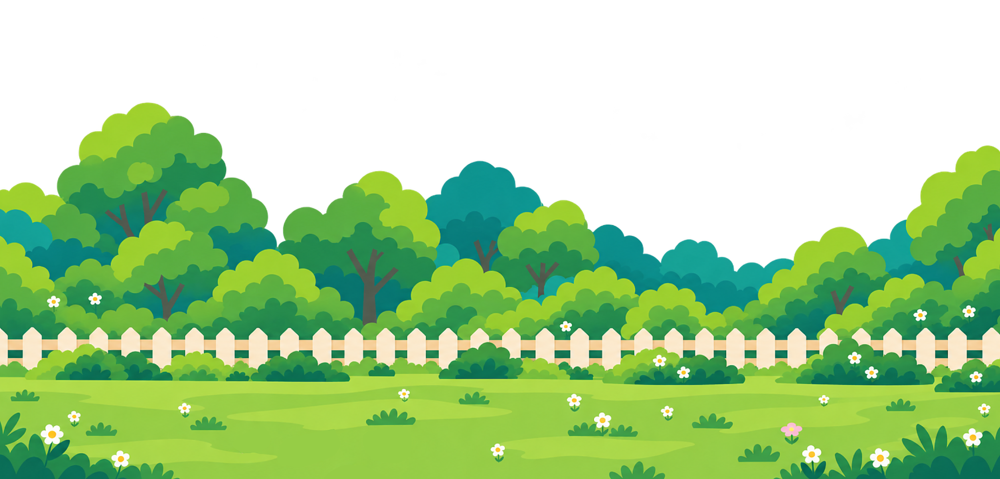
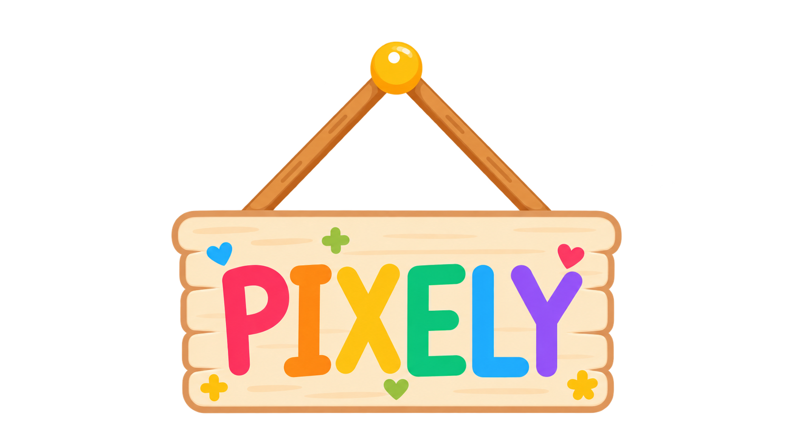
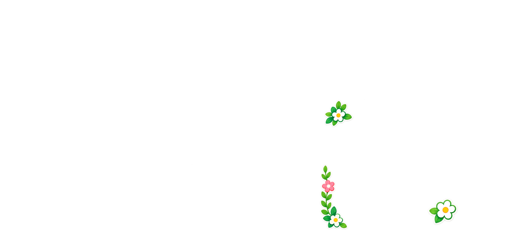

꿈뜰이의 우당탕탕 대환장 나들이!!

fan made game
잠뜰TV 13주년 ANNIVERSARY
꿈뜰이 옷장
새 게임
이어하기
챕터
콜렉션
설정
설정
나들이를 편하게 즐길 수 있게 골라줘요
×
소리
대사
연출
편의
전체 음량
효과음
대사 출력음
효과음 켜기
집과 덤불을 눌렀을 때 소리가 나요
켜기
끄기
출력음 종류
대사 미리보기에서도 들을 수 있어요
선택 안 함
다정한 옹알
발랄한 옹알
느긋한 옹알
미리 듣기
글자 표시 속도
느리게
보통
빠르게
즉시 표시
대사 글자 크기
작게
보통
크게
자동 진행 대기 시간
대사가 모두 나온 뒤 기다리는 시간
대사 미리보기
다시 보기
초대는 받았고, 귀가는 미정!
모션
제목·집·덤불·팻말·나뭇잎·굴뚝 연기
켜기
끄기
조사 가능한 곳 표시
클릭할 수 있는 곳에 작은 표시를 붙여요
켜기
끄기
읽은 대사만 건너뛰기
처음 보는 대사는 건너뛰지 않아요
켜기
끄기
자동 저장
게임 진행 중 자동 저장을 사용해요
켜기
끄기